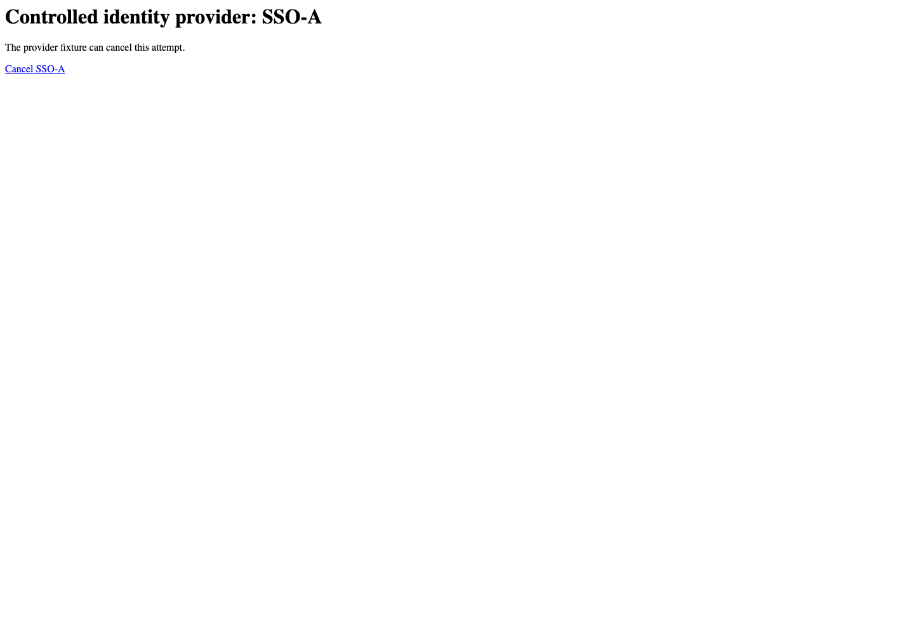
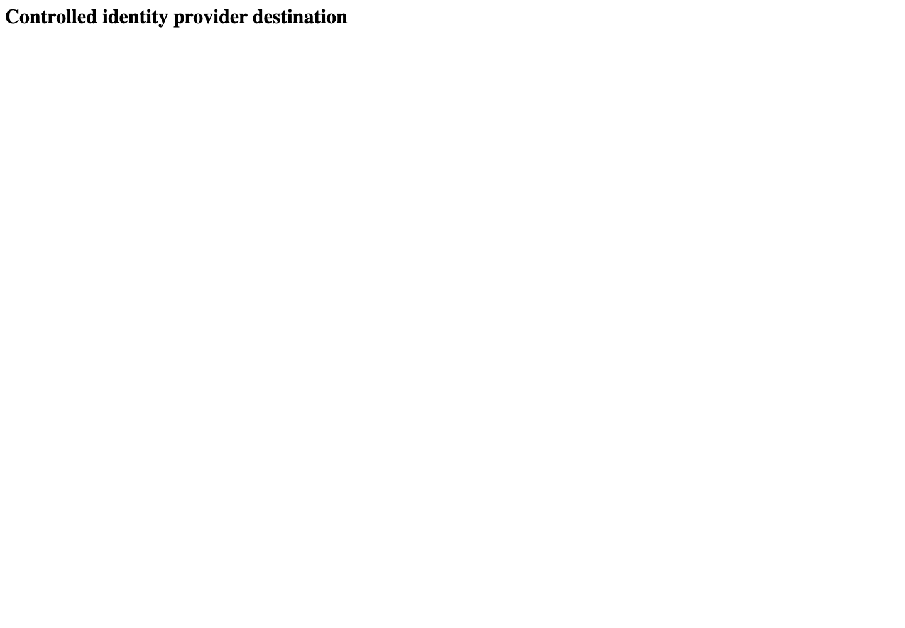

All canonical cases
AUTH-143: Use a new SSO attempt after provider cancellation Business acceptance remains unverified. Owner: unknown. Review the canonical definition and fixture limits before acceptance.
Latest local result: PASS Business acceptance: NOT_ESTABLISHED.
The latest local result describes execution. The historical definition review assesses the case design before execution.
Latest step screenshot evidence: COMPLETE . 5/5 canonical steps have execution screenshots.
Canonical Gherkin definition . Definition version: 2. SHA-256: a186f55508b22eb4ef00c0a4584b454f98370ab89104b1554692d2afdf15977b.
Historical definition review (preflight): UNVERIFIED A definition review FAIL can coexist with local PASS. The definition failed preflight quality checks.
This historical review does not change the latest execution result. Resolve definition gaps before business acceptance.
Canonical Gherkin steps Feature: SSO security
@AUTH-143
Scenario: Use a new SSO attempt after provider cancellation
Given User A is an entitled fixture user in an isolated browser context with empty browser storage
And the LOCAL login page is visible; the identity provider cancelled SSO-A and returned to this login page
When User A clicks the link labelled "Sign In With SSO" on the login page
Then the browser starts a new navigation to the configured identity-provider SSO URL
And the tablist named "workspaces" on the Home page is absent Acceptance and evidence limits: NO_COMPLETE_REAL_APPLICATION_BINDING, CANONICAL_REVIEW_OR_EVIDENCE_UNRESOLVED.
Planned essential canonical frames: 2. Plan completeness requires separate review.
Latest attempt AUTH-143 source configured SSO navigation PASS · application/run-078-retry/auth-143-source-configured-sso-navigation-bddb5f7531d4-attempt-1 · ACTUAL_APPLICATION_LOCAL_SERVICES
Actual MFE; controlled callback and credential responses. External destinations are fulfilled locally. No actual identity-provider acceptance, server fallback or OAuth security claim.
2026-10-22T06:52:47.316Z to 2026-10-22T06:52:49.512Z
Assertions and result · Artifact manifest · Exact run inputs and source hashes
Result SHA-256: f402a302b00215962f53fe42e55d0040a901c7fa53760f428ca222d0e624bbfe Playwright trace
Machine observations Screenshot capture: CAPTURED. Named frames: 8.
Step screenshot evidence: COMPLETE. 5/5 canonical steps have execution screenshots.
Canonical step timeline Given User A is an entitled fixture user in an isolated browser context with empty browser storage
1. step-01 Visible state after step 1: Given User A is an entitled fixture user in an isolated browser context with empty browser storage
2026-10-22T06:52:48.204Z · 1440×100099567bb3808af958792a6b38879d848938c08b417fb7dfff75bde75fcbd51a3a And the LOCAL login page is visible; the identity provider cancelled SSO-A and returned to this login page

2. sso-a-provider-before-cancel The first actual SSO navigation reached the controlled provider cancellation boundary.
2026-10-22T06:52:48.360Z · 1440×100039e771c35b80bd5883ecc3ed5f926f66749dc8405ff69f91cfc34e3e737c1c82 3. sso-a-cancelled-return The provider cancellation returned to the anonymous LOCAL login page.
2026-10-22T06:52:48.887Z · 1440×100099567bb3808af958792a6b38879d848938c08b417fb7dfff75bde75fcbd51a3a 4. step-02 Visible state after step 2: And the LOCAL login page is visible; the identity provider cancelled SSO-A and returned to this login page
2026-10-22T06:52:49.018Z · 1440×100099567bb3808af958792a6b38879d848938c08b417fb7dfff75bde75fcbd51a3a When User A clicks the link labelled "Sign In With SSO" on the login page

5. step-03 Visible state after step 3: When User A clicks the link labelled "Sign In With SSO" on the login page
2026-10-22T06:52:49.129Z · 1440×100044dc73ff83a0198601b1971f227c8b513dae1c2b97fb4b98c461db71b6e55747 Then the browser starts a new navigation to the configured identity-provider SSO URL
6. step-04 Visible state after step 4: Then the browser starts a new navigation to the configured identity-provider SSO URL
2026-10-22T06:52:49.162Z · 1440×100044dc73ff83a0198601b1971f227c8b513dae1c2b97fb4b98c461db71b6e55747 And the tablist named "workspaces" on the Home page is absent
7. step-05 Visible state after step 5: And the tablist named "workspaces" on the Home page is absent
2026-10-22T06:52:49.196Z · 1440×100044dc73ff83a0198601b1971f227c8b513dae1c2b97fb4b98c461db71b6e55747 Additional named frames 8. final-result The final visible state after the named test assertions.
2026-10-22T06:52:49.263Z · 1440×100044dc73ff83a0198601b1971f227c8b513dae1c2b97fb4b98c461db71b6e55747 Screenshots establish visible state only. Assertions and traces support functional claims.
Earlier attempt history (2) Earlier attempt PASS (superseded by latest PASS) AUTH-143 source configured SSO navigation PASS · application/run-050/auth-143-source-configured-sso-navigation-bddb5f7531d4-attempt-1 · ACTUAL_APPLICATION_LOCAL_SERVICES
Actual MFE; controlled callback and credential responses. External destinations are fulfilled locally. No actual identity-provider acceptance, server fallback or OAuth security claim.
2026-10-22T06:04:09.584Z to 2026-10-22T06:04:12.229Z
Assertions and result · Artifact manifest · Exact run inputs and source hashes
Result SHA-256: 9a46bbc2aff47dafc5f8a383c90c16631b05de046bf4dd04504fe5cf7670177c Playwright trace
Machine observations Screenshot capture: CAPTURED. Named frames: 6.
Step screenshot evidence: COMPLETE. 5/5 canonical steps have execution screenshots.
Canonical step timeline Given User A is an entitled fixture user in an isolated browser context with empty browser storage
1. step-01 Visible state after step 1: Given User A is an entitled fixture user in an isolated browser context with empty browser storage
2026-10-22T06:04:11.277Z · 1440×1000ee79c3381c56ac1bd5f9f0d790973bb73938f0a798d5311a761619f1269b9a0f And the LOCAL login page is visible; the identity provider cancelled SSO-A and returned to this login page
2. step-02 Visible state after step 2: And the LOCAL login page is visible; the identity provider cancelled SSO-A and returned to this login page
2026-10-22T06:04:11.509Z · 1440×1000ee79c3381c56ac1bd5f9f0d790973bb73938f0a798d5311a761619f1269b9a0f When User A clicks the link labelled "Sign In With SSO" on the login page
3. step-03 Visible state after step 3: When User A clicks the link labelled "Sign In With SSO" on the login page
2026-10-22T06:04:11.685Z · 1440×100044dc73ff83a0198601b1971f227c8b513dae1c2b97fb4b98c461db71b6e55747 Then the browser starts a new navigation to the configured identity-provider SSO URL
4. step-04 Visible state after step 4: Then the browser starts a new navigation to the configured identity-provider SSO URL
2026-10-22T06:04:11.718Z · 1440×100044dc73ff83a0198601b1971f227c8b513dae1c2b97fb4b98c461db71b6e55747 And the tablist named "workspaces" on the Home page is absent
5. step-05 Visible state after step 5: And the tablist named "workspaces" on the Home page is absent
2026-10-22T06:04:11.769Z · 1440×100044dc73ff83a0198601b1971f227c8b513dae1c2b97fb4b98c461db71b6e55747 Additional named frames 6. final-result The final visible state after the named test assertions.
2026-10-22T06:04:11.853Z · 1440×100044dc73ff83a0198601b1971f227c8b513dae1c2b97fb4b98c461db71b6e55747 Screenshots establish visible state only. Assertions and traces support functional claims.
Earlier attempt PASS (superseded by latest PASS) AUTH-143 source configured SSO navigation PASS · application/run-017/auth-143-source-configured-sso-navigation-bddb5f7531d4-attempt-1 · ACTUAL_APPLICATION_LOCAL_SERVICES
Actual MFE; controlled callback and credential responses. External destinations are fulfilled locally. No actual identity-provider acceptance, server fallback or OAuth security claim.
2026-10-22T05:30:44.998Z to 2026-10-22T05:30:55.671Z
Assertions and result · Artifact manifest · Exact run inputs and source hashes
Result SHA-256: 0abb778d6d8473b90852ac8a53d50d78739712e1639dc5d31bc17055a26db5a4 Playwright trace
Machine observations Screenshot capture: CAPTURED. Named frames: 6.
Step screenshot evidence: COMPLETE. 5/5 canonical steps have execution screenshots.
Canonical step timeline Given User A is an entitled fixture user in an isolated browser context with empty browser storage
1. step-01 Visible state after step 1: Given User A is an entitled fixture user in an isolated browser context with empty browser storage
2026-10-22T05:30:50.520Z · 1440×100099567bb3808af958792a6b38879d848938c08b417fb7dfff75bde75fcbd51a3a And the LOCAL login page is visible; the identity provider cancelled SSO-A and returned to this login page
2. step-02 Visible state after step 2: And the LOCAL login page is visible; the identity provider cancelled SSO-A and returned to this login page
2026-10-22T05:30:51.651Z · 1440×100099567bb3808af958792a6b38879d848938c08b417fb7dfff75bde75fcbd51a3a When User A clicks the link labelled "Sign In With SSO" on the login page
3. step-03 Visible state after step 3: When User A clicks the link labelled "Sign In With SSO" on the login page
2026-10-22T05:30:53.425Z · 1440×100044dc73ff83a0198601b1971f227c8b513dae1c2b97fb4b98c461db71b6e55747 Then the browser starts a new navigation to the configured identity-provider SSO URL
4. step-04 Visible state after step 4: Then the browser starts a new navigation to the configured identity-provider SSO URL
2026-10-22T05:30:53.619Z · 1440×100044dc73ff83a0198601b1971f227c8b513dae1c2b97fb4b98c461db71b6e55747 And the tablist named "workspaces" on the Home page is absent
5. step-05 Visible state after step 5: And the tablist named "workspaces" on the Home page is absent
2026-10-22T05:30:53.682Z · 1440×100044dc73ff83a0198601b1971f227c8b513dae1c2b97fb4b98c461db71b6e55747 Additional named frames 6. final-result The final visible state after the named test assertions.
2026-10-22T05:30:53.842Z · 1440×100044dc73ff83a0198601b1971f227c8b513dae1c2b97fb4b98c461db71b6e55747 Screenshots establish visible state only. Assertions and traces support functional claims.